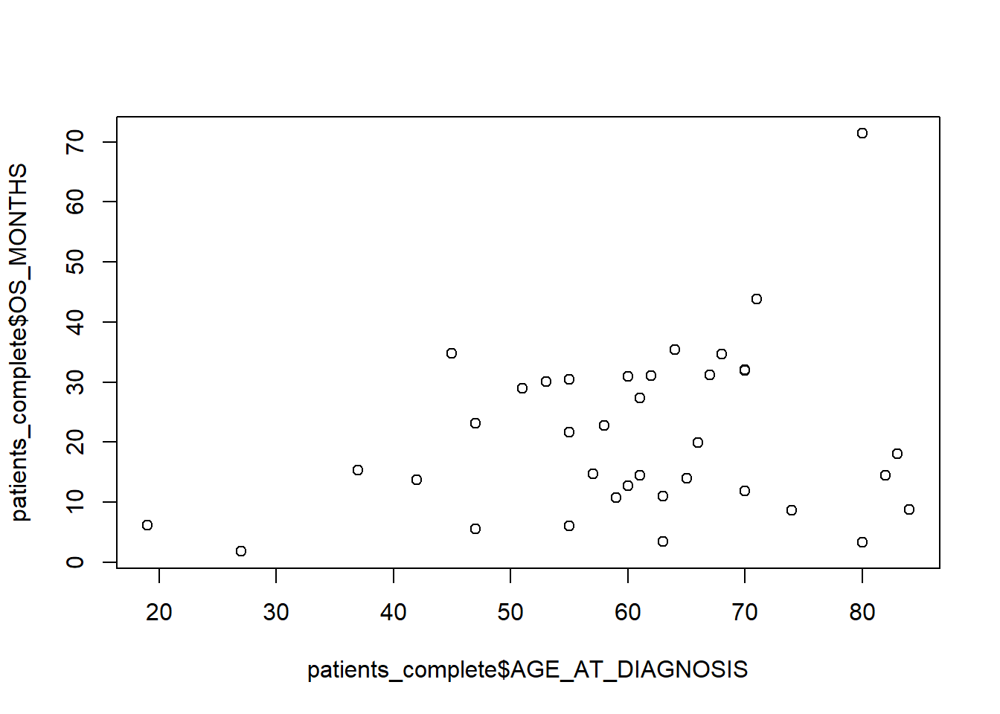
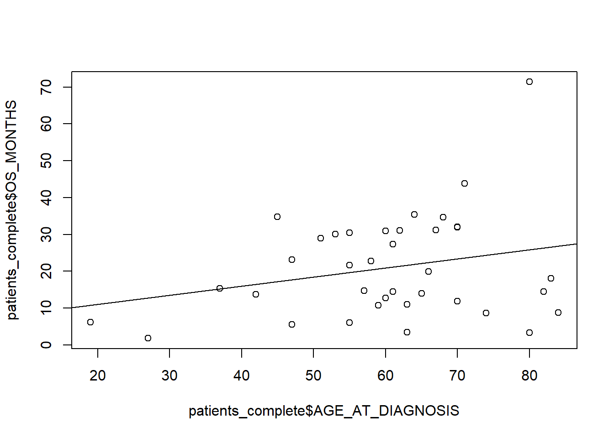
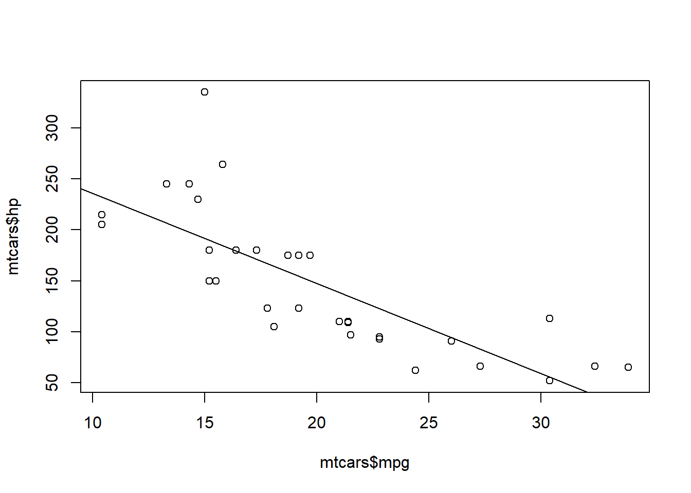

Session 1
Welcome to the First session! By now the basic thing
Today, We’ll go over how variables can be stored together and start analyzing some patient data from The Cancer Genome Atlas.
Data Structures
So far we have seen variables made of single values. R has some pretty powerful data structures to store multiple, related values
vectors
a vector is a collection of items1. We create a vector by using the c(item1,item2,item3) function.
numbers <- c(1, 2, 3, 4, 5)we can assign a name to each element in the vector by assigning a vector of names to the names() function. Note names() assigns the name in place2, i.e it doesn’t create a new vector with the names we have to assign to a variable
names(numbers) <- c("n1", "n2", "n3", "n4", "n5")or by providing them before the values when we create the vector.
numbers <- c("n1" = 1, "n2" = 2, "n3" = 3, "n4" = 4)The names() function can also be used alone to get the names of a vector
names(numbers)## [1] "n1" "n2" "n3" "n4"All items in a vector must be of the same type. if we try to mix instance letters and numbers, R will force (coherce) all items to be the most general type. The character type is always the most general type.
numbers2 <- c(1,2L, 1+2i, "three")typeof(numbers2)## [1] "character"Try to come up with a case for why this could be a problem.
Your turn, create a vector to store the first 6 letters of the alphabet. What will be the resulting type?
(letters <- c("a", "b", "c", "d", "e", "f"))## [1] "a" "b" "c" "d" "e" "f"lists
Lists are similar to vectors but can contain items of different types, without the need to cohere to the most general type.
list <- list(2,1,"a")Because of this lists are as whole of type list,
typeof(list)## [1] "list"The environment panel of RStudio can be used to easily see what a list contains.
Another difference from vectors is that lists are recursive i.e a list can contain lists of things while a vector will always expand to a 1-dimensional flat structure
c(c(1,2),c(3,4))## [1] 1 2 3 4list(list("1","2"), list("3","4"))## [[1]]
## [[1]][[1]]
## [1] "1"
##
## [[1]][[2]]
## [1] "2"
##
##
## [[2]]
## [[2]][[1]]
## [1] "3"
##
## [[2]][[2]]
## [1] "4"try it yourself, create a list containing 3 items named item1, item2, item3 and print their names to screen. HINT: names in lists work similarly to vectors
named_list <- list(1, 2, 3)
names(named_list) <- c("item1", "item2", "item3")
names(named_list)## [1] "item1" "item2" "item3"data frames
data frames are the most commonly used structure in R. Think of them as tables in a spreadsheet. They are 2-dimensional. The only constraint is that all the values in each column must be of the same type.
We can create a data frame with data.frame(). Each column is specified with the name = vector syntax. We separate columns with a commma
(cells <- data.frame("plate" = c(1, 2, 3, 4), "Doubling_time" = c(10, 20, 10, 40), "cell_line" = c("HC70", "HCC1400", "HCC1500", "BT-20")))## plate Doubling_time cell_line
## 1 1 10 HC70
## 2 2 20 HCC1400
## 3 3 10 HCC1500
## 4 4 40 BT-20Of course we can define the vectors separately and then bundle them.
plate = c(1, 2, 3, 4)
Doubling_time = c(10, 20, 10, 40)
cell_line = c("HC70", "HCC1400", "HCC1500", "BT-20")
cells <- (data.frame(plate, Doubling_time, cell_line))Names in a data table have 3 layers. - column names - row names - item names
We can view column names with colnames(frame) and edit them with colnames(frame) <- names.
for instance, we can rename all columns in our cells to consistently start with a capital letter3.
colnames(cells) <- c("Plate", "Doubling_time", "Cell_line")
cells## Plate Doubling_time Cell_line
## 1 1 10 HC70
## 2 2 20 HCC1400
## 3 3 10 HCC1500
## 4 4 40 BT-20Row names work like column names but we use the rownames(frame) function It is tempting to use row names to encode an identifier instead of using an ID column (in our example this was Plate). some - old style - R functions expect this. However these days doing so is discouraged as row names cannot be accessed as if they were a normal column.
Like with vectors names() allows us to edit and access the name of individual items.
Usually indidivual names are not useful as we should be able to identify each value by column and row.
Finally, there are some other useful functions with dataframes. dim() returns the dimensions (rows, columns) of a data frame
dim(cells)## [1] 4 3while nrow(),ncol() return the number of rows and columns, respectively
nrow(cells)## [1] 4ncol(cells)## [1] 3Remember, Unlike excel however, formulas are recorded in your script/console, not the data frame itself. The frame simply stores values
matrices
a matrix is a table, or precisely a 2 dimensional vector. Like vectors they can contain only one type of data. we can create a matrix of sizes i, j by calling matrix(vector_with_data, nrow=i, ncol=j, dimnames(list_of_names)).
matrix(data = c(1,2,3,4), nrow = 2, ncol = 2, dimnames = list(list("a","b"), list("c", "d")))## c d
## a 1 3
## b 2 4unless we specify byrow = T, matrices are populated column by column. Dimension names are always taken row names then columns
matrix(data = c(1,2,3,4), nrow = 2, ncol = 2, dimnames = list(list("a","b"), list("c", "d")), byrow = T)## c d
## a 1 2
## b 3 4Matrices are not very flexible as a place to store data but are really good for mathematical operations, which is what they tend to be used for.
Maths on Vectors, matrices and data frames
We can apply maths to vectors too, in this case the operation will be applied to every element of the vector.
For instance can increase all numbers by 1
numbers = c(1, 2, 3, 4, 5)
numbers + 1## [1] 2 3 4 5 6when using operations on 2 vectors we apply it element by element.
c(2, 3, 4) + c(3, 2, 4)## [1] 5 5 8R vectors have a somewhat surprising behavior when we operate on items of different length. we have seen a length of 1 leads to the item being recycled Else the longer one should be a multiple of the longer
c(1,2,3,4) * c(1,2)## [1] 1 4 3 8However, because we can do it, it doesn’t mean we should be typically. Think about how the result will look like before doing so.
similarly we can apply mathematical operations on a whole matrix
numbers_matrix <- matrix(data = c(1,2,3,4), nrow = 2, ncol = 2, dimnames = list(list("a","b"), list("c", "d")))numbers_matrix * 2## c d
## a 2 6
## b 4 8Data frames are a bit tricker, as not all columns are numbers.
cells+1## Error in FUN(left, right): non-numeric argument to binary operatorWe’ll see some ways to only select the columns we need.
Arrays
Arrays are higher dimensional objects. In fact, vectors are just a special 1-dimensional array, matrices are a 2-dimensional array. Be aware they exist.
S3, S4 and R6 object system
More complex objects made of a collection of these structures can be implemented in R. This is often done to represent specialized objects that have associated methods, or specialized variants of a function4. We will come across some examples of this in session 3. For now just be aware that more complex structures can exist.
Subsetting
Subestting vectors
In R items are numbered from 1 5. We can use the vector[index] operator to get the element at that index
Remember the numbers vector, we can get the second number with
numbers[2]## [1] 2try to select numbers 1 and 3. Hint you can use a vector of indices with as your index
numbers[c(1,3)]## [1] 1 3we can also use : to return a sequence of numbers and use it to choose all elements from x to y. In R sequences are inclusive6
numbers[2:4]## [1] 2 3 4Note if you come from Python, you might be used to not needing a start or an end for [:] to get all the items from/to an index. This doesn`t work in R.
numbers[:3]## Error: <text>:1:9: unexpected ':'
## 1: numbers[:
## ^We can combine sequences and single values Now try selecting all items from 1 to 3 and item 5.
numbers[c(1:3,5)]## [1] 1 2 3 5We can also remove values at an index by using [-index]. try to remove the 3rd item.
numbers[[3]]## [1] 3Subsetting lists
Indices in lists work largely in the same way as in vectors. However, since lists are composed of other lists sub-setting with [] returns a list
list[1]## [[1]]
## [1] 2to get the actual elements we can use the double bracket [[]] operator. it works like [] but does not support negative indexes.
list[[1]]## [1] 2If we have a named list, we can use [[]] for names too.
named_list[["item1"]]## [1] 1Although typically we use the $name shortcut
named_list$item1## [1] 1Subsetting matrices
matrices work like vectors but we can choose from 2 dimensions with [row,column]
numbers_matrix[1,2]## [1] 3we can omit the row, or column but not the comma to get all columns or rows, respectively. So we can get all columns for the firt row with
numbers_matrix[1,]## c d
## 1 3Or all the rows in the first column
numbers_matrix[,1]## a b
## 1 2since matrices are vectors, we can select the individual elements without specifying columns or rows
numbers_matrix[4]## [1] 4Data Frames
Data frames behave like matrices with [row, column] indices. Unlike matrices or lists, the [] operator can return either a vector or a data frame. Normally there is no need to worry about this.
cells[1,3]## [1] "HC70"The matrix trick to get all columns or rows for a given row or column trick works here too
cells[1,]## Plate Doubling_time Cell_line
## 1 1 10 HC70cells[,1]## [1] 1 2 3 4For a data frame the [index] syntax will return the specified column(s) as a data frame
cells[1]## Plate
## 1 1
## 2 2
## 3 3
## 4 4[[]] is less useful for data frames. it does not support the empty row/column syntax
cells[[1,]]## Error in `[[.data.frame`(cells, 1, ): argument "..2" is missing, with no defaultcells[[,1]]## Error in `[[.data.frame`(cells, , 1): argument "..1" is missing, with no defaultbut [[index]] returns a vector with the column, rather than a data frame with the column
cells[[1]]## [1] 1 2 3 4As for named lists, $name returns the column as a vector
cells$Plate## [1] 1 2 3 4If we assign values to a column that doesn’t exist we can add it to the data frame (like names() this happens in place7). Traditionally we use $name here to create a new column with the given name. NOTE The cell lines, their features and their sources here are fictional.
cells$source <- c("ATCC", "ATCC", "ECACC", "ATCC")now our table has an extra row:
cells## Plate Doubling_time Cell_line source
## 1 1 10 HC70 ATCC
## 2 2 20 HCC1400 ATCC
## 3 3 10 HCC1500 ECACC
## 4 4 40 BT-20 ATCCAssigning a column to NULL deletes it.
cells$source <- NULLcells## Plate Doubling_time Cell_line
## 1 1 10 HC70
## 2 2 20 HCC1400
## 3 3 10 HCC1500
## 4 4 40 BT-20Reading Tabular Data
We have seen how to create and represent tabular data in R with a data frame, Typically we load a data set from a file.
There are packages to load Excel files but typically we remove all the Excel specific information and export tabular data as a plain text file. In these files each line represents a row, with the columns within each line separated by a delimiter character. if the delimiter is a tab character we get a tab separated value (tsv) file, if the delimiter is a comma we get a comma separated value (csv) file. For instance, a stock room table like this
| Item | cabinet | shelf |
|---|---|---|
| TAE | A | 1 |
| Agarose | A | 2 |
| Ladder | B | 1 |
Would be represented as this in a csv file:
Item,Cabinet,Shelf
TAE,A,1
Agarose,A,2
Ladder,B,1
TSV and CSV can be opened and saved in excel but you may need to specify the separator for TSV files and the resulting files might have be saved as .txt rather than .tsv.
In R we can read a table from plain text file with read.table(). we need to specify the separator, in the tab separated case it is \t Remember to store the table in a variable!
data <- read.table("table.txt", sep = "\t")if we are reading a csv file we can use read.csv. There is no difference with read.table but the default arguments match a typical csv file.
data <- read.csv("table.csv")blank spaces as automa tically treated as missing data. Other conventions exists, so we e can specify a character that is interpreted as missing values to ensure R can represent them as NA with na_strings.
data <- read.csv()Analysis of TGCA data
Now we undserstand how to get data into R, let’s try to open the data_clinical_patient.tsv file from the setup folder and save it as patients. This file has a header, a comment at the start and some missing values encoded as na or missing so we need to adjust some parametrs:
- set # as the comment character (use the
comment.charargument) - set the header argument to TRUE.
- Use “na” and “missing” as the na.strings argument Hint you can pass a vector to na.strings()
Remember to set the working directory to the right location first!
patients <- read.table("mel_ucla_2016/data_clinical_patient.txt", sep="\t", comment.char = "#", header = T )Exploring the data
let’s start by checking the dimensions of the table. Remeber a function to do that?
dim(patients)## [1] 38 9we can use summary() to get a quick summary of the data.
summary(patients)## PATIENT_ID OS_STATUS OS_MONTHS SEX AGE_AT_DIAGNOSIS TREATMENT
## Length:38 Length:38 Min. : 1.80 Length:38 Min. :19.00 Length:38
## Class :character Class :character 1st Qu.:11.00 Class :character 1st Qu.:55.00 Class :character
## Mode :character Mode :character Median :18.00 Mode :character Median :61.50 Mode :character
## Mean :20.97 Mean :60.53
## 3rd Qu.:31.00 3rd Qu.:69.75
## Max. :71.40 Max. :84.00
## NA's :1
## DURABLE_CLINICAL_BENEFIT M_STAGE PREVIOUS_MAPKI
## Length:38 Length:38 Length:38
## Class :character Class :character Class :character
## Mode :character Mode :character Mode :character
##
##
##
## The resulting information is most useful for numerical columns or, as we’ll see in the next session facrtors.
We can use table to get counts for each value
table(patients$OS_STATUS)##
## 0:LIVING 1:DECEASED
## 19 19now try using table with the metastatic stage (M_STAGE)
table(patients$M_STAGE)##
## M0 M1a M1b M1c
## 1 5 4 28We can combine nrow() and maths to get to percentages. We even get to keep the name of the values
table(patients$M_STAGE)/nrow(patients)*100##
## M0 M1a M1b M1c
## 2.631579 13.157895 10.526316 73.684211For numerical variables we can use min(), max() and range() to get the minimum, maximum or both values for a column
range(patients$AGE_AT_DIAGNOSIS)## [1] 19 84Depending on whether we expect our variable to be normally distributed or not we can start looking at how values are distributed A normal distribution looks like this - there is central value that is the most commonly observed and the remaining values are symmetrically distributed at either side of it:
d <- density(rnorm(1e6))
plot(d, ylab = "Density", xlab = "Value", main = "Density plot for a normal distribution") Compare that with a non normal distribution.
Compare that with a non normal distribution.
d <- density(rbeta(1e6,shape1 = 5, shape2 = 2))
plot(d, ylab = "Density", xlab = "Value", main = "Density plot for a non normal distribution") While there are formal tests for whether an observation follows a normal distribution, more often than not a quick histogram will let us judge if something is normal enough - we’ll see how to generate them.
While there are formal tests for whether an observation follows a normal distribution, more often than not a quick histogram will let us judge if something is normal enough - we’ll see how to generate them.
Normal variables
For now let’s assume the age at diagnosis is normally distributed. In this case we want the mean and standard deviation to represent the central value and the spread of our data. Remember in a normal distribution ~68% of the data will be in the mean ± sd range, ~ 95% of the data will be in the mean ± 2 sd range and ~99.7% within mean ± 3 sd We can get the mean and standard deviation with the mean() and sd() function.
mean(patients$AGE_AT_DIAGNOSIS)## [1] 60.52632sd(patients$AGE_AT_DIAGNOSIS)## [1] 14.42171Non-normal variables
If instead we assume the age at diagnosis is not normally distributed, the central tendency and spread of our data is better represented by the median and the quantiles.
median() will happily give us the median
median(patients$AGE_AT_DIAGNOSIS)## [1] 61.5the quantile() function will show us the values for 4 quantiles The N-th quantile represents the value that contains n % of the samples
quantile(patients$AGE_AT_DIAGNOSIS)## 0% 25% 50% 75% 100%
## 19.00 55.00 61.50 69.75 84.00In this case the 75% of the values are contained between 19 and 69.75 75%.
And IQR() will return the inter quantile range
IQR(patients$AGE_AT_DIAGNOSIS)## [1] 14.75Dealing with missigness
What if we’re intersted in how many months of overall survival?
mean(patients$OS_MONTHS)## [1] NALooks like something is off. Looking at the summary, we have a NA value. NAs propagate through calculations 8
We can simply deal with NA by either removing or ignoring them Imputation, or the art of predicting missing values is beyond the scope of this tutorial.
missing <- c(NA,NA,NA,NA,1,2,1,1,1,2,3)Some functions, such as mean can be told to remove NAs from using na.rm = T
mean(missing, na.rm = T)## [1] 1.571429We can also manually remove all NAs with na.omit().
missing <- na.omit(missing)W
If running on a data frame it will remove the whole rows consisting of any incomplete cases.
Now remove NAs from the table and save the new data frame in a variable called patients_complete. Na.omit on a data frame it will remove the whole rows consisting of any incomplete cases.
patients_complete <- na.omit(patients)Whether we should ignore NA values from calculations or drop any case with a missing value is an analysis choice. Personally, I think it makes sense to ignore NAs if they are very sporadic. If NAs are concentrated in one or more columns, it may make sense to ignore columms where we have lots of missingness. Sometimes, especially if the NA values are in key columns we might want to consider complete cases only
Conditions
We have seen we can get a column or a row by manually providing an index for the values we need. We can ask R to choose all that match one or more conditions Some of this will be familiar if you. Even if you’re familiar with it might be worth going quickly through this
Relational Operators
We can use relational operators to ask about the relationship between two values. Most operators are intuitive but checking if something is equal is done with == rather than = because = is already used to assign values to variables
| operators | function |
|---|---|
| == | equal to |
| != | not equal to |
| > | more than |
| >= | more or equal to |
| < | less than |
| <= | less or equal to |
| %in% | check in |
| is.na() | check for NA values |
So if a is bigger than b, the following should be TRUE
a = 1
b = 2
1 > 2## [1] FALSEComparisons with NAs return NA
a > NA## [1] NAto check if something is NA we cannot use == but need to use is.na()
NA == NA## [1] NAis.na(NA)## [1] TRUE%in% attempts to match elements from the two vectors, regardless of their order or length
c(1, 2, 3) %in% c(3, 2, 1)## [1] TRUE TRUE TRUEWhereas == works element by element in order and would return FALSE for 1 and 3
c(1, 2, 3) == c(3, 2, 1)## [1] FALSE TRUE FALSEOperators work on TRUE and FALSE values too. There is a slight distinction between using == and isTRUE and isFALSE. Using == 0 is interpreted as FALSE and 1 as TRUE.
1 == T## [1] TRUE0 == F## [1] TRUEisTRUE and isFALSE check for an actual logical TRUE or FALSE value.
isTRUE(1)## [1] FALSElike maths and relational operators boolean operators can compare two vectors element by element
c(1,2,3) < c(2,3,4)## [1] TRUE TRUE TRUEoperators work on characters too, but in a slightly different way: >, <, <=, >= work on alphabetical order
"a">"b"## [1] FALSE"barts" < "blizzard"## [1] TRUEHowever matching characters gets funny, and we’ll see how to deal with them in session 2.
"a" %in% "aereoplane"## [1] FALSEConditional subsetting
To conditionally subset a vector we can provide a condition for itself Remember our numbers vector, we can choose all numbers > 2
numbers[numbers > 2]## [1] 3 4 5for a data frame, we typically want to choose some or all rows where a specific column matches a condition.
patients[patients$AGE_AT_DIAGNOSIS < 40,]## PATIENT_ID OS_STATUS OS_MONTHS SEX AGE_AT_DIAGNOSIS TREATMENT DURABLE_CLINICAL_BENEFIT M_STAGE
## 3 Pt11 1:DECEASED 15.3 Male 37 Pembrolizumab PD M1c
## 6 Pt14 0:LIVING 1.8 Female 27 Pembrolizumab PD M1c
## 8 Pt16 1:DECEASED 6.1 Male 19 Pembrolizumab PD M1b
## PREVIOUS_MAPKI
## 3 No
## 6 No
## 8 YesNow let’s try to subset our table to choose only patients (rows) that were diagnosed after 65.
patients[patients$AGE_AT_DIAGNOSIS > 65,]## PATIENT_ID OS_STATUS OS_MONTHS SEX AGE_AT_DIAGNOSIS TREATMENT DURABLE_CLINICAL_BENEFIT M_STAGE
## 1 Pt1 1:DECEASED 19.9 Female 66 Pembrolizumab PD M1b
## 7 Pt15 1:DECEASED 32.1 Male 70 Pembrolizumab PR M1b
## 9 Pt17 1:DECEASED 31.2 Male 67 Pembrolizumab PD M1a
## 17 Pt24 1:DECEASED 31.9 Male 70 Pembrolizumab PR M1c
## 18 Pt25 1:DECEASED 8.6 Male 74 Pembrolizumab PD M1c
## 19 Pt26 0:LIVING 43.8 Male 71 Pembrolizumab CR M1c
## 20 Pt27 0:LIVING 18.0 Male 83 Pembrolizumab CR M1c
## 21 Pt28 1:DECEASED 14.4 Male 82 Pembrolizumab PR M1c
## 22 Pt29 1:DECEASED 8.8 Male 84 Pembrolizumab PD M1c
## 24 Pt30 1:DECEASED 3.3 Female 80 Pembrolizumab PD M1c
## 27 Pt33 0:LIVING 71.4 Female 80 Nivolumab CR M1a
## 31 Pt37 0:LIVING 11.9 Female 70 Pembrolizumab PR M1c
## 37 Pt8 0:LIVING NA Male 69 Pembrolizumab CR M1a
## 38 Pt9 0:LIVING 34.6 Male 68 Pembrolizumab CR M0
## PREVIOUS_MAPKI
## 1 No
## 7 Yes
## 9 No
## 17 No
## 18 Yes
## 19 Yes
## 20 No
## 21 No
## 22 Yes
## 24 No
## 27 No
## 31 Yes
## 37 No
## 38 NoHere the difference between %in% and == is crucial as the data frame will most likely be not ordered by the column we subset by
Logical operators
The next step is to combine multiple conditions. They follow Boolean logic, with the exception of NAs that always propagate through
| Symbol | Name | Function |
|---|---|---|
| & | and | TRUE if both TRUE |
| | | or | TRUE if A is TRUE or B is TRUE, or both are TRUE |
| xor() | exclusive (disjunctive) or | TRUE only if either A is TRUE OR b is TRUE |
| ! | negate | Negates the following expression |
& is TRUE only when both expressions are TRUE
1 < 2 & 3 > 4## [1] FALSE| is TRUE when any expression is TRUE
1 < 2 | 3 > 4 ## [1] TRUE| is also TRUE when both are TRUE
1 < 2 | 3 < 4## [1] TRUEif we want to return FALSE when both are TRUE we can use the exclusive or xor(expression 1, expression 2)
xor(1 < 2, 3 < 4)## [1] FALSE! negates whatever follows
!1 > 2 ## [1] TRUEAs with other operators, they work on vectors too
c(F, F, T) | c(T, F, F)## [1] TRUE FALSE TRUENow try selecting all the patients from the complete case table (patients_complete) with age of diagnosis below 40 OR above 65
patients_complete[patients_complete$AGE_AT_DIAGNOSIS < 40 | patients_complete$AGE_AT_DIAGNOSIS > 65,]## PATIENT_ID OS_STATUS OS_MONTHS SEX AGE_AT_DIAGNOSIS TREATMENT DURABLE_CLINICAL_BENEFIT M_STAGE
## 1 Pt1 1:DECEASED 19.9 Female 66 Pembrolizumab PD M1b
## 3 Pt11 1:DECEASED 15.3 Male 37 Pembrolizumab PD M1c
## 6 Pt14 0:LIVING 1.8 Female 27 Pembrolizumab PD M1c
## 7 Pt15 1:DECEASED 32.1 Male 70 Pembrolizumab PR M1b
## 8 Pt16 1:DECEASED 6.1 Male 19 Pembrolizumab PD M1b
## 9 Pt17 1:DECEASED 31.2 Male 67 Pembrolizumab PD M1a
## 17 Pt24 1:DECEASED 31.9 Male 70 Pembrolizumab PR M1c
## 18 Pt25 1:DECEASED 8.6 Male 74 Pembrolizumab PD M1c
## 19 Pt26 0:LIVING 43.8 Male 71 Pembrolizumab CR M1c
## 20 Pt27 0:LIVING 18.0 Male 83 Pembrolizumab CR M1c
## 21 Pt28 1:DECEASED 14.4 Male 82 Pembrolizumab PR M1c
## 22 Pt29 1:DECEASED 8.8 Male 84 Pembrolizumab PD M1c
## 24 Pt30 1:DECEASED 3.3 Female 80 Pembrolizumab PD M1c
## 27 Pt33 0:LIVING 71.4 Female 80 Nivolumab CR M1a
## 31 Pt37 0:LIVING 11.9 Female 70 Pembrolizumab PR M1c
## 38 Pt9 0:LIVING 34.6 Male 68 Pembrolizumab CR M0
## PREVIOUS_MAPKI
## 1 No
## 3 No
## 6 No
## 7 Yes
## 8 Yes
## 9 No
## 17 No
## 18 Yes
## 19 Yes
## 20 No
## 21 No
## 22 Yes
## 24 No
## 27 No
## 31 Yes
## 38 NoCommon statistical tests:
Now we can create groups, we can start to explore their differences. As a statistic language R is loaded with a library of built-in statistical functions, we’ll barely scratch the surface here! There are 2 main families of tests: Parametric (for normally distributed variables) and non parametric (for non normally distributed ones) Before using a test we also need to check whether the assumptions are met before running any tests.
We’ll also very briefly discuss p-values. Note there is a whole world beyond p-values and lots of controversies over their (ab)use in biology see this Nature Editorial For simplicity we’ll use both non parametric and parametirc test on the same data.
Parametric tests
The t-test compares the means between two groups. In R, It uses the Welch variant that assumes an unequal variance, often a safe assumption. we need to provide 2 groups, we can do this by conditionally sub-setting
t.test(x = patients_complete[patients_complete$PREVIOUS_MAPKI == "No", "OS_MONTHS"], y = patients_complete[patients_complete$PREVIOUS_MAPKI == "Yes", "OS_MONTHS"])##
## Welch Two Sample t-test
##
## data: patients_complete[patients_complete$PREVIOUS_MAPKI == "No", "OS_MONTHS"] and patients_complete[patients_complete$PREVIOUS_MAPKI == "Yes", "OS_MONTHS"]
## t = 1.4947, df = 31.623, p-value = 0.1449
## alternative hypothesis: true difference in means is not equal to 0
## 95 percent confidence interval:
## -2.429506 15.800935
## sample estimates:
## mean of x mean of y
## 23.50000 16.81429we can store the p-value in a vector by choosing p.val from the result of the test.
p_vals <- t.test(x = patients_complete[patients_complete$PREVIOUS_MAPKI == "No", "OS_MONTHS"], y = patients_complete[patients_complete$PREVIOUS_MAPKI == "Yes", "OS_MONTHS"])$p.valThe one-way anova tests the means between multiple groups, In R we can use the aov function. the syntax here is slightly odd, as we need to use the x ~ groups form. we also need to call summary to extract the P values and other information.
anova <- aov(patients_complete$OS_MONTHS ~ patients_complete$M_STAGE)
summary(anova)## Df Sum Sq Mean Sq F value Pr(>F)
## patients_complete$M_STAGE 3 1273 424.3 2.411 0.0845 .
## Residuals 33 5808 176.0
## ---
## Signif. codes: 0 '***' 0.001 '**' 0.01 '*' 0.05 '.' 0.1 ' ' 1we can add our P value to the p values vector, to avoid overwriting we use the append function. Note summary(anova) returns a list, we can then subset until we get our P value.
p_vals <- append(p_vals, summary(anova)[[1]][5][1,1])Non-paramtetric statistical tests
the Wilcox rank sum test is a non parametric test similar to a T-test. Indeed the wilcox.test() function works in a similar way
wilcox.test(x=patients_complete[patients_complete$PREVIOUS_MAPKI == "No", "OS_MONTHS"], y = patients_complete[patients_complete$PREVIOUS_MAPKI == "Yes", "OS_MONTHS"])## Warning in wilcox.test.default(x = patients_complete[patients_complete$PREVIOUS_MAPKI == : cannot compute
## exact p-value with ties##
## Wilcoxon rank sum test with continuity correction
##
## data: patients_complete[patients_complete$PREVIOUS_MAPKI == "No", "OS_MONTHS"] and patients_complete[patients_complete$PREVIOUS_MAPKI == "Yes", "OS_MONTHS"]
## W = 210, p-value = 0.1288
## alternative hypothesis: true location shift is not equal to 0We can again extract the p value an append it to our vector
p_vals <- append(p_vals,wilcox.test(x=patients_complete[patients_complete$PREVIOUS_MAPKI == "No", "OS_MONTHS"], y = patients_complete[patients_complete$PREVIOUS_MAPKI == "Yes", "OS_MONTHS"])$p.val)## Warning in wilcox.test.default(x = patients_complete[patients_complete$PREVIOUS_MAPKI == : cannot compute
## exact p-value with tiesThe Kruskal-Wallis rank sum test is often referred as a non parametric one way anova. we can run one with kruskal.test()
kruskal.test(patients_complete$OS_MONTHS ~ patients_complete$M_STAGE)##
## Kruskal-Wallis rank sum test
##
## data: patients_complete$OS_MONTHS by patients_complete$M_STAGE
## Kruskal-Wallis chi-squared = 4.235, df = 3, p-value = 0.2372getting the p-value is as easy as for the t and Wilcoxon tests
p_vals <- append(p_vals, kruskal.test(patients_complete$OS_MONTHS ~ patients_complete$M_STAGE)$p.val)Adjusting the P-Value
Traditionally, we reject the null hypothesis at the p<0.05 level. This value represents a 1/20 chance of seeing a difference as big or greater by chance alone. It follows then that if we have 20 comparisons we can expect one to be TRUE by chance. Therefore, we need to adjust the p value to consider the number of comparisons. The “p-ajust()” function can then correct the observed p values for multiple comparisons with many methods. for instance we can use a bonferroni correction9
p.adjust(p_vals, method = "bonferroni")## [1] 0.5795994 0.3378689 0.5151183 0.9487212now do the same but with the FALSE discovery rate (FDR)10 is. Hint type ?p.adjust to see what methods corresponds to FDR
p.adjust(p_vals, method = "fdr")## [1] 0.1931998 0.1931998 0.1931998 0.2371803We can see the Bonferroni correction is more conservative than the FDR11
Base R Plots
base R plots can be displayed in the plots pane of R studio. *Note R will refuse to draw a plot if the plot panel is too small. Simple R plots can be generated quickly with base functions and can be extensively customised. We’ll also introduce the ggplot package that can generate publication quality plots with less effort in session 2.
R tracks every time we create a new plot so any items added to a plot get added to the lastly created plot.
Scatter plots
we can plot a scatter plot with plot(x, y)
plot(patients_complete$AGE_AT_DIAGNOSIS, patients_complete$OS_MONTHS) we can add a trend line with abline(), following the format y=ax+b.
plot(patients_complete$AGE_AT_DIAGNOSIS, patients_complete$OS_MONTHS)
abline(a = 1,b =+ 1)we can also add a vertical or horizontal line by specifying the intercept with h or v.
plot(patients_complete$AGE_AT_DIAGNOSIS, patients_complete$OS_MONTHS)
abline(h = 10) We can also fit a line from more complex modeling, for instance from a linear regression. note
We can also fit a line from more complex modeling, for instance from a linear regression. note lm() takes the y ~ x order.
plot(patients_complete$AGE_AT_DIAGNOSIS, patients_complete$OS_MONTHS)
abline(lm(patients_complete$OS_MONTHS ~ patients_complete$AGE_AT_DIAGNOSIS)) We can change the two axis. ylim and xlim control the start and end of x and y axis. Be careful as R will clip off any value outside that range, again without warning
plot(patients_complete$AGE_AT_DIAGNOSIS, patients_complete$OS_MONTHS, ylim = c(0,100), xlim = c(30,80)) We can also add a title and some label to the axis. We do this with main, xlab and ylab
We can also add a title and some label to the axis. We do this with main, xlab and ylab
plot(patients_complete$AGE_AT_DIAGNOSIS, patients_complete$OS_MONTHS, main = "this is the title", ylab = "y axis", xlab = "x axsis")
Histograms
Histograms can be used to visualize the distribution of values in a variable. In base r we can generate one with hist()
hist(patients_complete$OS_MONTHS) Again, we can control several parameters, We can manually specify the number of breaks rather than use what number R thinks appropriate
Again, we can control several parameters, We can manually specify the number of breaks rather than use what number R thinks appropriate
hist(patients_complete$OS_MONTHS, breaks=4) we can also add a colour and add a density line. To do so we need to switch to plotting probabilities with probability=T in the hist function.
we can also add a colour and add a density line. To do so we need to switch to plotting probabilities with probability=T in the hist function.
hist(patients_complete$OS_MONTHS, col="pink", probability = T)
lines(density(patients_complete$OS_MONTHS), col="purple") Axis and plot labels work similarly to the scatter plot above, try to redo the first histogram but change the labels so they are nicer
Axis and plot labels work similarly to the scatter plot above, try to redo the first histogram but change the labels so they are nicer
hist(patients_complete$OS_MONTHS, ylab = "Frequency", xlab="Overal Survivial (months)", main = "overall survival") ## Box plots
## Box plots
Box Plots show the median value and distribution of a variable between 2 or more groups. We can use the boxplot() function for this.
boxplot(patients_complete$OS_MONTHS~patients_complete$M_STAGE) By default the whiskers extend to 1.5x the interquartile range of each gruop. we can change the multiplier by specifying it to range.
By default the whiskers extend to 1.5x the interquartile range of each gruop. we can change the multiplier by specifying it to range.
boxplot(patients_complete$OS_MONTHS~patients_complete$M_STAGE, range=0.4) We can even control the shape of the outlier points with pch.
We can even control the shape of the outlier points with pch. ?points reveal what each value corresponds to.
boxplot(patients_complete$OS_MONTHS~patients_complete$M_STAGE, range=0.4, pch=18)
Now let’s add some colour to the plot. Try adding colours to the plot above with the “col” argument. hint, if you don’t want to have the groups use the same colour(s), specify a number of colours in the colour vector matching the number of groups
boxplot(patients_complete$OS_MONTHS~patients_complete$M_STAGE, range = 0.4, pch = 18, col = c("red","green","blue","yellow"))
Saving plots
In RStudio there are 2 ways to save a plot. you can select the export button on the plots panel. this opens a save window where you can save as pdf or image.
Alternatively, you can save plots automatically from your script. there are 2 step for this approach. first you need to choose a graphic device i.e pdf("filename")
pdf("plot.pdf")then generate your plot
plot(mtcars$hp~mtcars$mpg)your plot is now in the device. it will not be printed in rstudio. we can still add elements to it, for instance a trend line
abline(lm(mtcars$hp ~ mtcars$mpg))to save your plot you need to release the graphic devices
dev.off()The choice of device changes the output format. pdf() and svg() produce vector images where you can zoom the image without loosing quality and potentially edit the elements in Inkscape or Illustrator 12 However, complex vector files (particularly of saved as svg) can get quite slow.
png() will produce raster images, these are similar to photos, where you can’t zoom and get a sharperimage
Now go to your working directory and look for the plot. you should have gotten something like this
plot(mtcars$hp~mtcars$mpg)
abline(lm(mtcars$hp ~ mtcars$mpg))
Saving data
we can save files to a tabular format with write.table(). By default R add both rows and column names. Normally row names are not meaningful so we can omit them wuth row.names = F.
write.table(cells, row.names = F, sep = ",", file = "table.csv")As with read.csv(), the write.csv() function is similar but has appropriate defaults for CSV files.
By default. this encloses any string in ""
we can get rid of it by setting quotes=FALSE. There is normally no real need to do this.
write.table(cells, row.names = FALSE, sep = ",", file = "table.csv", quote = FALSE)if append is TRUE R will add the current data to the specified file without overwriting it.
In fact, unlike most languages in R any single variable that is not NULL is actually a vector of size 1↩︎
Under the hood R might still do some copying↩︎
This sounds excessively pedantic but consistency helps avoid silly typos when you want to refer to the columns by name later in your script↩︎
for instance, base R makes very heavy use of S3 objects. The model class resulting from lm() has a method for the
plot()function. When we callplot()on a model it knows how to plot all the plots needed for a linear model because it can use the method in the S3 class model↩︎unlike most programming languages that start from 0↩︎
Unlike say Python, the last element is y, not y-1↩︎
Although under the hood R will still possibly does some copying↩︎
Think of them like prions. Any operation with a
NAwill returnNA, unless we remove them before↩︎The bonferroni correction simply multiplies the p-value by the number of tests↩︎
The FALSE discovery ratio is explained here instead↩︎
Personally, as a rule of thumb I prefer using FDRs for everything that will get downstream validation↩︎
Although changing the image adter is not recommended for reproducibility - R plots can be easily made publication ready↩︎